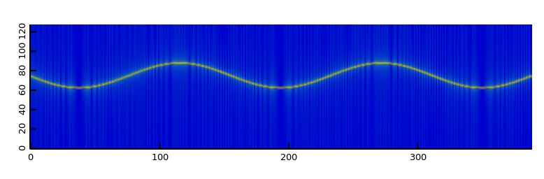

window function
1-D slice signal
(default 256) short-time frame width for each FFT segment
(default nperseg / 2) short-time frame overlapped length for each FFT segment
a magnitude 2D spectrogram
example spectrogram of freq-modulated sin(a t + b cos(c t)) its plot should be simple sinwave in freq domain 
1 import mir.ndslice : as, map, iota; 2 import mir.math : sin, cos; 3 import std.math : PI; 4 import dspeech.plot : plotMatrix, docDir; 5 6 auto time = iota(50000).as!double / 10e3; 7 auto mod = 1e3 * map!cos(2.0 * PI * 0.5 * time); 8 auto xs = map!sin(2.0 * PI * 3e3 * time + mod); 9 auto sp = spectrogram(xs); 10 auto fig = plotMatrix(sp); 11 fig.save(docDir ~ "dspeech.feature.spectrogram.png", 12 cast(int) sp.length!1 * 2, cast(int) sp.length!0 * 2);
Computes a magnitude 2-D spectrogram from a time-domain 1-D signal